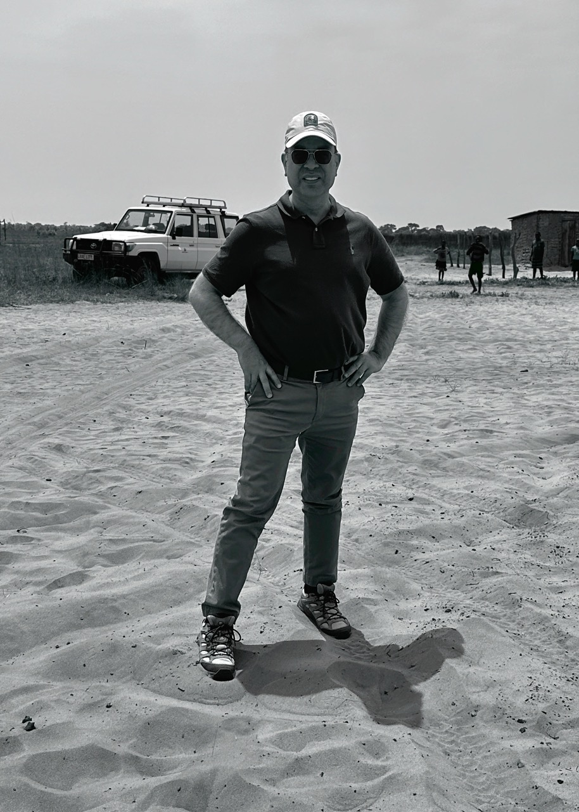

nothing is ever black and white
These photographs come from two extended trips to Western Province, Zambia, for my doctoral research on health systems. My days were filled with geospatial data, regression models and health system metrics, but the most lasting impression was not the numbers. It was the people. From the lively provincial capital of Mongu to the most remote rural health posts, I was inspired by a remarkable spirit of determination in the face of poverty and a changing climate: a desire not just to survive, but to find a way forward.
I arrived as a complete outsider. Before taking any photograph, I spoke with each person, and afterwards I showed them the image. I believe those small exchanges built a trust that you can see in their faces.
One moment has stayed with me. At Salunda Health Post, a mother who had walked with her child and waited for hours in heat above 40 °C graciously allowed me to photograph them. Moments like these turn words such as “access” and “utilization” from technical terms into real lives, lived with remarkable strength and resolve.
My hope is that, in some small way, this work helps build a future in which the resilience of the Zambian people is matched by strong health services they can trust and rely on, services that truly improve their lives.
With heartfelt thanks to Dr. Mwimanenwa Njungu and Dr. Inonge Milupi for their translation and guidance.


Some photographs say more together than apart. Each series here is a set of three: red, a single colour in a black-and-white world; perspective, lines and angles that pull the eye upward; and motion, the blur of people in transit.
red


perspective


motion


Buildings stripped back to line, shape and shadow. I am drawn to looking up, and to the moment a structure stops being a building and becomes a pattern.


Candid moments in city streets, where people, animals and light come together for a fraction of a second.


Quieter places: fog, rock, water and weathered wood.



I am a health systems researcher, and photography has long been my outlet: a way of seeing what numbers cannot capture. I work almost entirely in black and white, which strips a scene back to light, shape and expression. The title of this collection is a reminder that nothing, and no one, is ever as simple as it first appears.
Published
- antlers — In Focus, The Nature of Things, CBC (2006)
- antlers — Harrowsmith Country Life (2006)
- black n white — Showtime theme, Photo Life (2004)
Exhibitions
- Trajectory — Balderson Gallery, Balderson, Ontario (2007)
- Trajectory — The Coach House, The Estates of Sunnybrook, Toronto, Ontario (2007)
- antlers — EARTH360 Creative Expo, Guelph Environmental Leadership, Guelph, Ontario (2007)
Inquiries
I welcome inquiries from galleries, curators and publications interested in exhibiting or featuring this work. Please get in touch at cameronchiarot@gmail.com.